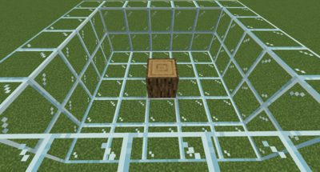
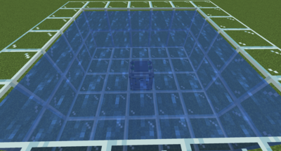
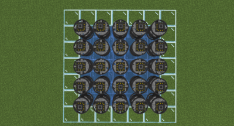
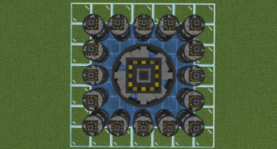
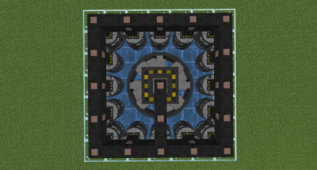
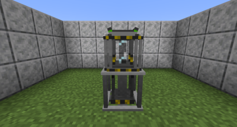
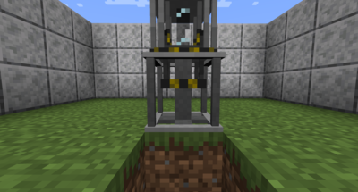

Fission Reactor

The Fission Reactor is the first atomic power source that you will be able to access as you progress in Nuclear Science. While crude and simple, it is fairly cheap to make. To construct the Fission Reactor, you will first need to craft a Fission Reactor Core. The core needs to be surrounded in a 5x5x2 area of water in order to be cooled:
Water placed below the core will not affect its cooling. Another item to note is that while a 5x5x2 area is the minimum required, a 7x7x2 volume is advised due to how block updates work, as the reactor will delete water sources in the cooling volume.

Next, cover the top of the 5x5x2 water volume with Turbines. You can either have single turbines, or turn a group of 9 into a large 3x3 turbine using a wrench. Connect the turbines to a wire once ready:

Now that you have the Reactor constructed, you will need a source of heat to make the steam. This is where the Fission part of the name comes into play. The following fuel rods can be used to heat the reactor:

The hotter the core gets, the more steam and thus electricity it will produce. The temperature associated with each fuel type is the temperature the reactor core will reach when four rods of that type are inserted. The Core has a temperature limit of 1417 C, and going above this temperature places it at risk of melting down! The Core will not meltdown immediately if it is overheated, but the longer it runs in an overheated state, the greater the chance is of a meltdown occurring. It is also important to note that the hotter a reactor runs, the quicker the fuel source degrades! When a fuel rod is expended, it will leave behind a Spent Fuel Rod which can be processed into other valuable materials.

If you were paying attention, you may have noticed that a full set of some fuel rods can actually cause the reactor to meltdown. There are two ways to deal with this issue. This first is to mix and match certain fuel types. However, this method is mostly a trial-by-error approach, and does not leave a large amount of room for error.

The second and more reliable approach is to use a Control Rod Assembly to decrease the rate of the Fission reaction. To use one, first place it under the core. Use Right-Click to extend it and Shift + Right-Click to retract the control rod. The more extended the rod is, the slower the reaction and thus cooler the reactor will run. A full extension will result in the fission reaction halting completely.

One final item of note on the Fission Reactor is that Tritium can be created by placing a Deuterium Cell in the reactor core while it is active. The Deuterium cell has a random chance to be transformed into a Tritium cell at any temperature, but the hotter the core, the greater the chance is!